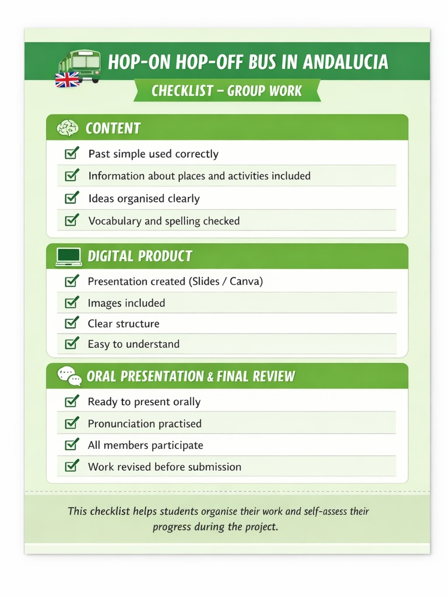
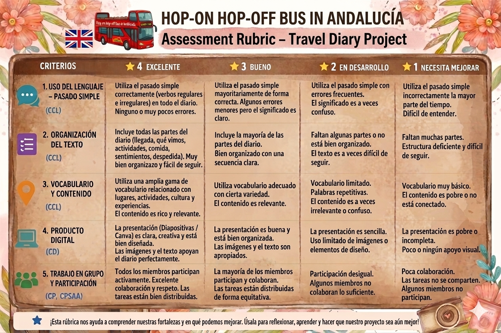

Instrumentos de evaluación del proyecto
En este proyecto utilizaremos diferentes técnicas e instrumentos de evaluación para valorar tanto el proceso de aprendizaje como el producto final.
👉 Apostamos por una evaluación continua y formativa, que permita mejorar poco a poco durante todo el proyecto.
🧠 ¿Cómo vamos a evaluar?:
Utilizaremos distintas técnicas:
- 👀 Observación sistemática.
- 📝 Análisis de las producciones del alumnado.
- 🗣️ Intercambios orales.
- Y los siguientes instrumentos:
- Lista de cotejo.
- Rúbrica de evaluación.
📌 Ambos instrumentos se entregarán al inicio del proyecto para que sepáis qué se espera de vosotros.
🎯 ¿Para qué sirve la evaluación?
- Seguir el progreso del alumnado.
- Detectar dificultades.
- Mejorar el producto final.
- Fomentar la reflexión y la autoevaluación.
Lista de cotejo
🧩 ¿Para qué sirve?
La lista de cotejo os ayudará a:
- Revisar vuestro trabajo.
- Saber si vais por buen camino.
- Mejorar antes de la entrega final.
👉 Se utilizará principalmente en:
- Actividad 6 (planificación).
- Actividad 7 (creación del diario).
📝 ¿Qué incluye?
Se organiza en tres bloques:
🗣️ Contenido lingüístico:
- Uso correcto del pasado simple
- Información sobre lugares y actividades
- Organización de ideas
- Vocabulario adecuado
💻 Producto digital
- Creación de la presentación
- Uso de imágenes
- Estructura clara
🎤 Exposición y revisión:
- Preparación de la presentación.
- Participación del grupo.
- Revisión final.
📊 ¿Cómo se utiliza?
- Iréis marcando los ítems conforme avanzáis.
- Os ayudará a ver vuestro progreso.
- Permitirá mejorar antes de entregar.
👉 Favorece la autonomía y autorregulación.
A continuación se presenta la lista de cotejo diseñada para el proyecto Hop-on hop-off bus in Andalusia: Travel Diaries.

Rúbrica de evaluación
🧩 ¿Para qué sirve?
La rúbrica será utilizada por el docente para evaluar:
- El diario de viaje.
- La presentación oral.
- El trabajo en grupo.
👉 Se aplicará principalmente en la Actividad 8.
📝 ¿Qué se evalúa?
🗣️ Contenido lingüístico:
- Uso del pasado simple.
- Corrección gramatical.
💻 Producto digital:
- Organización.
- Claridad.
- Presentación visual.
🎤 Presentación oral y trabajo en grupo:
- Participación.
- Comunicación.
- Colaboración.
📊 ¿Cómo funciona?
- Tiene diferentes niveles de logro.
- Permite una evaluación clara y objetiva.
- Ayuda a entender qué se espera del trabajo.
🎯 ¿Para qué nos ayuda?
- Conocer nuestros puntos fuertes.
- Mejorar los aspectos necesarios.
- Recibir una retroalimentación clara.
👉 También favorece la reflexión sobre el aprendizaje.
A continuación se presenta la rúbrica de evaluación diseñada para el proyecto Hop-on hop-off bus in Andalusia: Travel Diaries.
